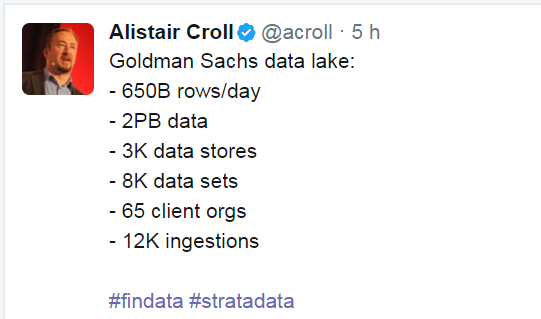
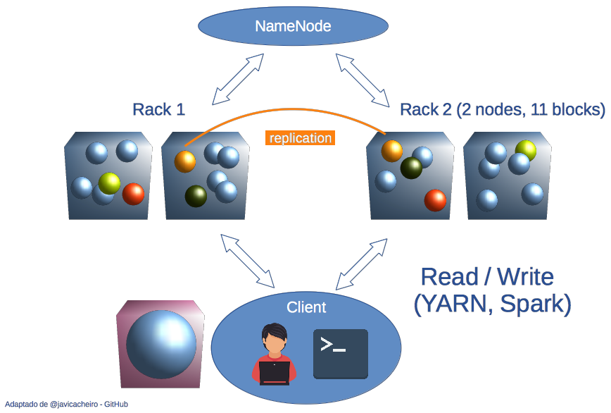
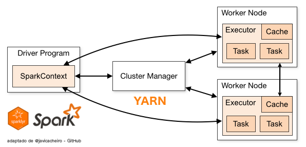
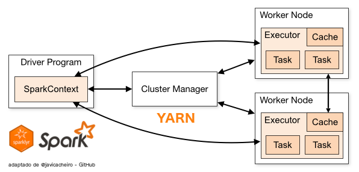
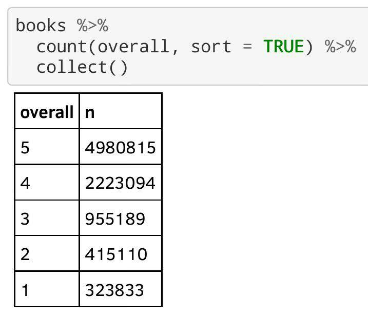
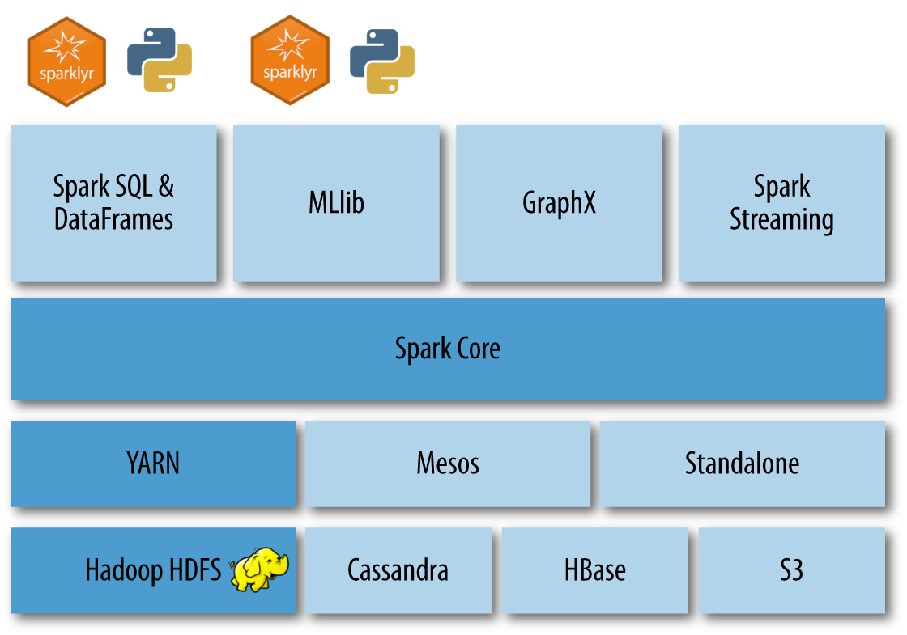

Sparklyr: entorno para Big Data con R
19 Outubro, 2017
Diapositivas 50%
Introducción
¿Qué es sparklyr?
Expone la API de Spark (en Scala) desde R.
Spark permite acceder al ecosistema Hadoop.
Simplemente, sintaxis dplyr!.
Creado por Rstudio en 2016.


¿Qué es ‘Big Data’?
Lectura y escritura de datos a gran escala, por:
- Volumen (Gb, Tb).
- Variedad / Complejidad.
- Velocidad (streaming).
¿Qué es ‘Big Data’?

Big Data y Sparklyr
¿Cómo se procesa?: HDFS
“hadoop distributed filesystem”
Distinto a NTFS, FAT, Ext3…
Optimizado para ficheros de >100 Mb.
- Formato de r/w, escrito en Java.
- Escritura en paralelo.
- Lectura en paralelo y secuencial.
- Escritura en paralelo.
“lectura secuencial de archivos… pero, cómo?”

RDD’s
Resilient Distributed Database.
Formato de archivo básico para HDFS.
Compuesto de bloques, duplicados en varios nodos.
Se recuperan en caso de pérdida de algún nodo.
Base de los dataframes utilizados por sparklyr.
Arquitectura HDFS
Bloques de 128 Mb.
Se replican por defecto 3 veces en distintos nodos.
NameNode es el árbol de directorios y metadatos:
- Indexa y mapea/localiza bloques y archivos.
Cómo funciona Spark?
Cómo funciona Spark?
Compute-centric
Los datos van a donde está el programa (MSExcel).
Data-centric
El paradigma del Big Data: el programa va a donde se hallan los datos (Spark).
Cómo funciona Spark?
 

# Spark context: local (for 'low memory' tasks only!)
sc <- spark_connect(master = "local",
spark_home = "/usr/hdp/2.4.2.0-258/spark")
# Spark context: yarn (for loading bigger datasets)
sc <- spark_connect(master = "yarn-client",
spark_home = "/usr/hdp/2.4.2.0-258/spark")Cómo funciona Spark?
Driver: donde está instalado el programa que conecta con Spark.
- $HOME: Formato ‘glusterFS’ (paralelo, UNIX-like).
- $HOME: Formato ‘HDFS’.
Master: lanza las operaciones (local, client, cluster).
YARN maneja los recursos que pide Spark.
Los Executors realizan las operaciones con los archivos.
Operaciones con datos en Spark
Map-Reduce
Concepto introducido por Google en 2004.
Puesto en práctica con Apache-Hadoop.
Map
Reduce
Map-Reduce
Concepto introducido por Google en 2004.
Puesto en práctica con Apache-Hadoop.
apply()
summarise()
Operaciones más importantes
Map – apply()
Filter – filter() group_by()
Reduce – count() summarise()
Collect – collect()
collect desencadena la ejecución de todas las operaciones previas, y descarga los datos al $HOME GlusterFS.
Spark = ‘Lazy evaluation’.
Ejemplos
Datos municipales
compostela %>%
filter(superficie_servicios > superficie_construida * 0.5) %>%
head(6) %>%
collect()compostela %>%
group_by(distrito, barrio) %>%
summarise(max_num_habitantes = max(num_habitantes),
media_num_parcelas = mean(num_parcelas),
total_num_viviendas = sum(num_viviendas)) %>%
head(4) %>%
collect()Ejemplos
Opiniones de libros en Amazon

Modelos de regresión y ‘machine-learning’

Y mucho más
Github: github.com/aurora-mareviv
Tutorial sparklyr del CESGA: /sparklyr_test
Web UI CESGA: hadoop.cesga.es
AUTORES
AGRADECIMIENTOS
Carlos Gil Bellosta (datanalytics.com)
@gilbellostaComunidad de Usuarios de R de Galicia.
Stickers!
Sparklyr Tutorial
Sparklyr tutorial
Jupyter Notebooks
-
- Jupyter notebook for interactive data exploration & modelling.
-
Another Jupyter notebook for interactive data exploration & modelling with a -much- bigger dataset.
Visualize it in nbviewer.jupyter.org
Sparklyr tutorial
R script
-
- A .R script that launches as an application.
spark-submit --deploy-mode client sparklyr_script.RClone this repo
git clone https://github.com/aurora-mareviv/sparklyr_testReferences
sparklyrpresentationsparklyrtutorial.sparklyrcheatsheet.sparklyr: creating extensions.- Differences between
sparkrandsparklyr. - Hive Operators and UDFs.
- String Functions in Hive.
- POSIX regular expressions.
- Material for Machine Learning Workshop Galicia 2016.
- PySpark Course.
- PySpark Programming Guide.
- PySpark cheatsheet.